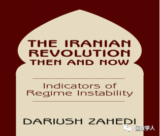
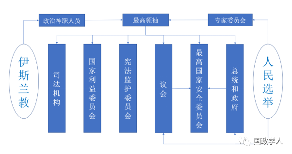

收录于合集

简 介
** 【作者】** Dariush Zahedi，生于伊朗德黑兰，加州大学伯克利分校政治学系讲师。
** 【 编译 】** 朱文菡
** **【 校对 】****黄运涛 彭小朵
** **【 审核 】****丁伟航
** **【 来源 】****The Iranian Revolution Then and Now: Indicators of Regime Instability，Westview, 2001:152-194.
比较伊朗伊斯兰革命前后威权政体的本质和领导能力
Comparing the Nature and Leadership Qualities of Pre-Revolutionary and Post- Revolutionary Authoritarian Regimes

内容提要
本文是 2001年出版的《伊朗革命前后：政权不稳定的因素》第六章，比较了在伊朗伊斯兰革命前后的君主专制制度和伊斯兰神权制度。作为资本主义民主和社会主义民主以外的第三种民主模式，伊朗的法基赫制度对伊斯兰社会转型研究具有重要意义。本文共分为五部分： 首先分别介绍了两种制度模式，然后在历史情境中先分析了君主专制的灭亡，随后具体展现了法基赫制度内部的分权抗衡模式在历史事件中的具体运作，最后作者提出面对保守势力的式微和年轻人的变革诉求制度将会向何处去的问题。
文章导读

与革命前时代不同，反对派力量目前杂乱无章、支离破碎，没有统一的领导人或意识形态。 ****这些因素似乎在短期内不太可能改变。但即使反对派奇迹般地超越其缺点并变得有凝聚力，它仍将面临挑战一个压迫政权的艰巨任务。这个政权不同于之前的君主制政权，它是根深蒂固且高度制度化的。
本文将 比较这两种制度的结构安排和制度基础。 **** 当然，结构性观点本身是有缺陷的，因为它低估了对于在集体主义和个人主义的独裁统治中占据国家战略地位并控制其权力杠杆的个人而言最重要的品质。 这些人作为或不作为，特别是在危机时期，可能对政治斗争的结果产生决定性的影响。事实上，即使在审查反对沙阿（Shah即波斯君主，在此特指萨法维国王）统治的革命动员时，也有必要多次提及沙阿的自我挫败、优柔寡断和不一致的对付对手的方法。
与沙阿不同，现政权的生存并不取决于一个人的果断性。事实上，在不严重危害该制度的情况下，该政权的高层领导大部分可以被免职。此外，伊朗对诉诸压倒性武力粉碎其共同敌人和维护其共同利益不会有丝毫内疚。然而，自1997年穆罕默德·哈塔米（Seyyed Mohammad Khatami）当选伊朗总统以来，政权内部的分裂已变得越来越公开和明显，增加了该政权分裂的可能性。为了加深我们对伊斯兰共和国生存前景的了解，本章将 系统地探讨革命前和当代伊朗的个别决策者与正式结构之间的联系。 ****
**
**
**1
**
个人主义专制
**革命前伊朗的权力不是制度化的 ,而是几乎完全由沙阿个人行使——“就所有意图和目的而言，沙阿是这样一种政权：君主等同于国家”。**1953年，沙阿在美国中情局（CIA）和英国军情六处（MI-6）支持的政变中重新掌权后，为了成为伊朗的绝对统治者，他成功地消灭了所有独立于他的个人或机构的权力。他让由他的密友和亲信组成的一小撮人担任高级职务。这就导致这些官员完全服从沙阿，随心所欲地给予庇护和权力。名义上，该国有宪法，通过选举产生的议会保障人民主权、保证法治，并严格限制君主制的权力。然而实际上，法治几乎是不存在的，沙阿站在国家权力结构的顶点，随心所欲地统治着——“沙阿是一系列圈子的中心，除了通过他，法院、皇室、中央政府、武装部队、SAVAK（国家安全部门，类似于美国中情局和英国军情六处）和警察各部门之间几乎没有接触。”其中许多机构职能重合且须直接向沙阿报告。沙阿似乎认为亲自作出所有重要决定既是他的使命，也是他的权利。正如他所说的那样，“完成任务需要权力。要掌握权力，就不要征求任何人的许可或建议。不要与任何人讨论决定。”
按照他的说法，沙阿使成立任何有组织的政治反对派都成为非法行为，并将议会变成了一枚橡皮图章。为了强调他的现代主义和温和倾向并把自己描绘成伊朗宪法的捍卫者，1958年沙阿通过皇家法令建立两党制。官方认可的政党，即Melliyun（民族主义党）和Mardom（人民党），均由沙阿的两位密友领导，他们都屈从于这一制度，并宣扬几乎相同的君主主义意识形态。但沙阿甚至无法容忍这种政治竞争的假象，在1963年建立了一党制，Melliyun被改造成新伊朗党——一个更温顺的政党。伊朗议会（Majles）和内阁也仅仅是作为附属物，它们的产生同样归功于沙阿的心血来潮。
时任伊朗司法部长阿萨索拉·阿拉姆（Assadollah Alam）在他的日记中写下：“长期以来，我们一直对国家的愿望充耳不闻，我们不应感到惊讶，因为国家本身对我们的态度同样如此。”
同时，首相和内阁的唯一目的是作为执行沙阿决定的工具，这些决定往往是武断的、没有充分的技术投入或事先与专家和顾问协商——“也许政府最显著的特征是其非政治性”。沙阿可以随意任命和拒绝部长，用阿拉姆的话说，每位部长“向国王[陛下]提交一份[通常旨在通过告诉他想要听到的东西来得到他的恩惠]的独立报告，而他的命令经常在不与我们可怜的首相协商的情况下发布”。
沙阿对于关乎他政权安危的军事和安全部队同样亲力亲为。他在70年代油价高企时向尼克松政府购买了大量除核武器外当时最尖端的武器装备，同时积极改善同苏联的关系。 **到 1978年，伊朗拥有波斯湾地区最强大、装备最好、训练有素的武装部队。它是当时世界第五大军事力量和第四大航空力量。**然而，尽管体量庞大，沙阿对军队的强烈不信任促使他在其指挥和控制岗位上划分并制造了各种隔阂，致使军队作为一个机构无法作出任何独立决定。沙阿根据对他的忠诚度选择军事指挥官，阻止他们有效地相互沟通。每个分支机构的负责人都被要求分别向沙阿报告，并被禁止在除沙阿在场的情况外彼此见面。
虽然军队是该政权的主要基础，但它很少直接干预政治以维持这一制度。相反，沙阿委托他臭名昭著的国家安全部门SAVAK负责对内镇压。在美国中情局和以色列情报系统摩萨德（Mossad）协助下，SAVAK成立于1957年，据估在沙阿统治下有3万多名全职雇员。不分青红皂白的骚扰和残暴是SAVAK的风格，大规模逮捕很常见。SAVAK已经渗透到伊朗国民生活的所有重要部门——政府、大学、工厂和伊朗学生组织。讽刺的是，SAVAK在沙阿反对者的夸大帮助下，成功地营造出了无所不能和无所不知的光环，反而有助于沙阿的统治。
**2
**
制度化的神权政治
与权力仅存在于国王手中而忽视制度的君主秩序形成鲜明对比的是，现政权分散着许多权力中心。 与君主制不同，神权制度的生存并不取决于个人的意愿和行为。相反，神职人员通过建立多种组织，在很大程度上使统治制度化，其中大多数组织远非仅仅装点门面，它们拥有相当大的权力。 事实上，由于政权已经变得高度分散，有人甚至认为毛拉们（伊斯兰教神职人员）对体制建设的迷恋已经有些过度了。伊斯兰共和国赋予三权分立的概念以新的内涵——因为该政权渗透着平行的权力结构，这种权力结构会损害效率并加剧派系主义的影响。
根据《伊斯兰共和国宪法》，该政权声称其权威和合法性的最终来源是神。因此，作为地球上的神的使者，法基赫（faqih，伊斯兰教法学家）被授予非凡的权力。法基赫机构现任领袖阿亚图拉·哈梅内伊（Ayatollah Khamenei）声称，每个人都有义务给予法基赫同与伊斯兰教法和其他伊斯兰法律同等程度的尊重。最高领袖位于伊朗政治结构的顶点，担任国家首脑、精神指导者、武装部队总司令和信仰保护者。根据1989年修订的《宪法》，最高领袖有权决定伊斯兰共和国的所有一般政策，并监督这些政策的执行。此外，《宪法》还规定，一旦最高领袖一职出现空缺，新的领导人将由民选的由83名成员组成的专家委员会选出。除了选择领导人外，专家委员会还有权罢免他。
然而，霍梅尼在他生命的尽头，认识到所有活着的高级宗教法学家基本上对他的教义都不利。因此，霍梅尼在1989年6月即他去世前几个月的一份重要声明中，将神职人员分为两个不同的类别——一是那些精通宗教和神圣法律的人，二是最熟悉当代社会经济和政治事务的人，后者即政治神职人员“应该是最终的权威”。宪法也因此进行了修改。哈梅内伊，尽管当时甚至不是阿亚图拉，更不用说大阿亚图拉了，却很快被专家委员会选中作为新的最高领袖。
不过尽管专家委员会由人民选举产生，但他们在参加选举前，必须得到由12名成员（神职人员、法官各6人）组成的宪法监护委员会的批准。实际上，除了评估伊朗议会颁布的所有立法在伊斯兰教义和宪法上的可接受性外，宪法监护委员会还有权筛选所有民选职位的候选人，其中包括总统、专家委员会和伊朗议会。同时宪法监护委员会中6名法官是由伊朗议会选举产生的。在法基赫制度下，所有权力机构的产生都受制于另一权力机构。
作为政府行政部门的负责人，总统也拥有重要的权力。作为行政部门的负责人，总统在全国权力结构中仅次于最高领袖。此外，总统还担任由11名成员组成的国家安全委员会主席，该委员会由神职人员、议长、经验丰富的外交官以及军队和革命卫队的高级官员组成，旨在全国有实权的执政精英之间就被认为与国家安全有关的事项达成共识。总统还控制着市长、省长和其他省级官员的选拔。但是，总统并不控制被授权推荐市长的市议会。并且，由最高领袖任命的伊玛目（星期五祈祷会领袖）负责“指导”地方官们协调星期五城市内各清真寺的教会祈祷。事实上，伊斯兰共和国已经巧妙地利用星期五的教会祈祷作为创造另一个高度一体化和集中化结构的手段。这种结构，除了扩大国家统治权外，还充当了政权的情报收集机构。
伊朗议会是神权政体中另一个强大的机构，其活力和相对开放体现了现政权和革命前政权之间的结构性差异。 自1980年成立以来，其运作远非仅仅作为沙阿统治时期存在的橡皮图章。伊朗议会辩论的公开性和立法的广泛性足以脱颖而出。即使是针对领导人的批评意见，只要不质疑或威胁既定秩序，也是可以容忍的。
与君主制形成鲜明对比的是，在神权制秩序中，司法机构在很大程度上也是独立和强大的。 站在司法系统的顶点是首席大法官。只有最高领袖才有权推翻首席大法官的决定。然而，与大多数其他政府部门一样，法律制度中也存在双重权力。法院处于革命法庭的阴影下，后者的法官比普通法院更有可能是神职人员，并且不一定允许向最高法院提出上诉。任何被视为颠覆或挑战该制度的罪行都将由革命法庭审判。
由此可见，神权政体与君主制完全不同，被赋予了牢固的制度基础 。然而，和他们之前的沙阿一样，伊朗执政的神职人员也建立了一个精心设计的镇压机构，作为他们权力的最终保障。与此同时，他们似乎还继承了沙阿对武装部队的恐惧和不信任。为了排除发生政变的可能性，他们建立了一个支离破碎的安全机构。
**3
**
**
**
比较当时和现在的伊朗决策者：头巾相较于王冠的优势
君主制缺乏自治机构，过分依赖沙阿作为统治者，这使得它比伊斯兰共和国更脆弱、更容易崩溃和被推翻。即使是其最终支柱——保皇武装和安全部队——虽然非常强大，但没有沙阿的许可，它们不能也不会采取行动。与沙阿试图塑造的形象相反，他是一个相当有不安全感、软弱和胆怯的统治者，具有强烈的宿命倾向且优柔寡断、容易动摇，这些问题在危机到来时变得尤其严重。事实上，沙阿在危机管理方面完全无能，在他的整个统治期间，他始终处于“在逆境或挑战面前撤退的模式”。最后，沙阿无法全心全意地致力于其政权的生存，无法坚决回应反对他统治的民众动员，导致他强大的安全部队瓦解，从而使得革命联盟取得了意想不到的迅速胜利。
相比之下， 伊朗目前的统治者除了拥有强大的制度基础外，迄今为止也证明了他们有能力克服危机时偶尔激烈的派系和政治斗争。 ****不同于沙阿，伊斯兰共和国议会 “将有效权力下放给法基赫级别以下的管理机构”，并避免过分依赖统治者个人。然而，伊斯兰共和国也有潜在问题——如果那些将为国家统治服务的神职人员团结在一起的信念被腐蚀和妥协，那么伊斯兰共和国的众多权力中心，包括政权的专制镇压机构，就可能成为政治精英们零和权力斗争的工具，从而引发内战和政权崩溃。
**4
**
**
**逆境中的沙阿： 一种反复出现的模式
与他的父亲不同，沙阿的性格根本不适合成为一个独裁者。在年轻的时候，他向朋友们透露“如果他不是国王，他本希望成为一名公务员，赚取足够的钱来放纵他对运动的热情。他宁愿找一份能让他免于决策负担的工作”。
1941年，当盟军入侵伊朗，迫使他的父亲退位，并默许他作为新国王加入王位时，沙阿在危机中倾向于沮丧和退缩的倾向首先表现出来——他曾试图自杀，使自己摆脱作为傀儡国王的困境。沙阿第一次真正重大的统治危机发生在20世纪50年代初。在伊朗民族主义首相穆罕默德·摩萨台（Mohammad Mossadegh）面前，沙阿黯然失色。摩萨台在伊朗石油工业国有化方面发挥的重要作用使他成为大部分伊朗人的民族英雄。1952年，在被军事政变推翻前一年，摩萨台为抗议沙阿拒绝授予他战争部控制权，愤而辞去了首相职务。在摩萨台辞职后，大批民众聚集在德黑兰街头，要求恢复摩萨台职务。经过五天的大规模抗议，沙阿不愿批准军队的全面镇压，他选择了退缩——恢复摩萨台职务并授权他完全控制战争部。1953年8月，当中情局和军情六处策划的推翻摩萨台的政变尚在准备中时，沙阿便失去了勇气，逃离了国家——先前往巴格达，然后逃往罗马。在随后的事件中，沙阿扮演了一个焦虑、不情愿和犹豫不决的旁观者的角色，而不是一个积极的参与者。他曾向美国大使吐露“他不愿看到流血事件”。
在阿亚图拉霍梅尼煽动的1963年6月骚乱期间，沙阿在面临危机时的意志瘫痪再次出现。尽管此时沙阿在很大程度上已成功将伊朗变成了一个绝对的君主制国家，但在面对霍梅尼的挑战时，他再次表现得犹豫不决。作为最高权力持有者和决策者，他难以采取坚定、无情和迅速的措施。然而，对于沙阿而言幸运的是，他的时任首相是他的密友阿萨索拉·阿拉姆。阿拉姆尽管存在羞耻感，仍然果断采取武力镇压以保护政权。如果没有阿拉姆坚定的回应，可以想象，尽管当然不能确定，世界可能在1978-1979年革命之前大约十五年就见证了巴列维王朝的灭亡。尽管如此，阿拉姆在1977年秋天因癌症而去世，剥夺了沙阿唯一可以坦率进谏的忠诚顾问的看法。
革命爆发的引信被沙阿于1977年发起的自由化政策点燃，他发起这一政策主要是为他儿子顺利继位而取悦新就任的卡特政府。因为卡特在就职演说中，批评了伊朗的人权记录。沙阿曾表示：“他们希望自由化！我会给他们自由化。我会放松螺丝，直到美国人要求再次收紧它们”。
然而，自由化政策却更有利于反对派们进行动员。自从沙伊的自由化政策启动以来，神职人员们（他们大多支持流亡在外的霍梅尼）的布道变得更大胆激烈。霍梅尼的文章于1978年1月在该国的一份官方报纸上发表。沙阿的犹豫加之错误的人事任命，使人们的不满迅速蔓延。根据沙阿的意愿，新任命的政府负责进一步放宽该制度，以平息反对派。令人惊愕的是 1978年10月17日，SAVAK和沙阿的强硬派将军宣布审查制度结束，并保证新闻自由。在史无前例的事件中，霍梅尼的照片以及富有同情心的文章开始出现在伊朗的主要报纸上。报纸在发布对新释放的政治犯的采访时，也开始揭露有关SAVAK酷刑室的令人痛心的细节。尽管要求戒严镇压，沙阿却他不同意军队向人群开枪。由于无法下定决心，沙阿显然希望美国作出决定，并承担起镇压示威活动的责任，而总统本人拒绝采取行动。沙阿的矛盾冲动破坏了他的武装和安全部队的凝聚力和团结。他没有给予他们镇压的许可。相反，士兵被允许与革命者友好相处，并长期暴露于毛拉们的反君主主义宣传。
**5
**
克服内忧外患： 自我重复的神职模式？
**
在革命前的伊朗，权力高度集中，几乎完全掌握在沙阿手里。 因此，他意志的瘫痪和崩溃在君主制的灭亡中起了重要作用。 伊朗现行政治制度的性质与以前有着根本不同。政治权力现在不是集中的，而是分散在不同的机构。然而，与沙阿时代一样，继续维护这一制度要求控制政权权力杠杆的国家关键决策者（以及负责执行命令的下属）在危机时分果断行事。神权政治的掌权者不仅必须克服内部分歧，应对外部挑战，建立共同阵线，而且要确保即使政权不受外部势力的挑战，政权内部的权力斗争本身也被控制在一定限度内，避免撕裂政权。虽然旨在解决精英阶层之间分歧的政治机构有助于促进政治妥协和加强凝聚力，但最终占据这些机构的个人必须克服分歧以保持制度完整性。尽管伊朗国内各派互斗，但迄今为止伊朗的集体统治者已多次证明，他们有能力维护这一制度。在危机处理方面，他们也比沙阿更加擅长镇压。
尽管伊朗的统治精英有着共同的背景和教育经历（有时通过通婚而得到加强），但从神权统治开始，他们在个人和意识形态问题上就出现了分歧。一开始，在霍梅尼的门徒中可以发现在国内社会经济、政治发展以及外交事务问题上明显保守或激进的倾向。渐渐地，一种更加中间派的做法开始显现出来。只要霍梅尼还活着，任何政权内部的竞争都不可能危及这个体系的存续，因为所有人都可以轻易地把问题推到霍梅尼那里。作为革命无可争议的领袖，霍梅尼的权威是无懈可击的。
与此同时，霍梅尼深受下属间派系主义的困扰，他毫不迟疑地敦促他的门徒团结起来，威胁要“摧毁任何[危及]集体统治的人”。他说：“无论谁寻求权力，都将导致一个人的堕落。撒旦知道操纵一个人的最好办法就是说服他相信自己的重要性”。霍梅尼还试图遏制自己的个人崇拜，指示媒体限制伊玛目的数量，霍梅尼宣称，“所有这些陈述都是造成不团结的欺骗行为。伊朗除了伊斯兰教之外没有任何界限”。他也意识到不可能排除分歧，因此试图通过鼓励在内部设立机构（议会、监护委员会、国家利益委员会、国家安全委员会）来防止分歧变得势不可挡。然而，为了避免疏远任何重要派系的忠诚，他倾向于支持每个主要派系。
革命之初，当成功推翻沙阿的可能性微乎其微时，霍梅尼和他的门徒们心甘情愿地冒着生命危险，忍受着酷刑的痛苦和牢狱之灾，以加速君主制的灭亡。在成功取代沙阿夺取了政权后，他们当然不会轻易放弃权力。结果就是伊朗现代历史上最血腥的镇压异见人士。在这个过程中，所有其他有组织的反政权势力都遭到重创。在有效平息反对派有组织的力量之后，伊朗统治精英之间的分歧更加明显。1989年，一群著名的激进神职人员让人们瞥见政权内部分裂的程度——包括领导了1979年德黑兰人质事件的Hojatoleslam Khoiniha和在黎巴嫩南部建立了真主党的Hojatoleslam Mohtashami决定离开全国领先的神职组织——主要成员是保守派的“德黑兰战斗的教士协会”（JRM）。为了与JRM竞争，他们建立了一个新的激进的神职组织，即“战斗的教士协会”（MRM）。
在1989年2 月伊朗伊斯兰革命十周年之际，当时被定为霍梅尼继任者的大阿亚图拉蒙塔泽里（Hossein Ali Montazeri）发表了一份写给霍梅尼的公开信，在信中他直指霍梅尼的革命做法是错误的——“在这十年中，我们高喊口号，这些口号是错误的，并且使我们在世界上被孤立，并且使人民与政权疏远。这样的口号是没有必要的。我希望我们进入第二个十年是行动的十年，而不再是口号的十年。国家管理需要变革。”这一公开信激怒了霍梅尼，蒙塔泽里被迅速解雇，至今仍被软禁（编者注：蒙特泽里于2003年被解除软禁，2009年逝世）。
作为革命和共和国无可争议的领袖，霍梅尼的话就等于上帝的话语。与此同时，在霍梅尼的健康状况迅速下降以及各派之间的分歧正在扩大的同时，蒙塔泽里的离开使该政权在继承问题上容易受到不稳定的影响。
然而，在霍梅尼于1989年6月去世后，伊朗领导人在缓和他们的派系斗争和争取共同阵线方面表现出了惊人的灵巧。意识到内部存在分歧并且没有建立共同阵线可能会导致制度崩溃，所有派系的领导人和普通成员都毫不犹豫地全力支持专家委员会选择哈梅内伊作为新的最高领袖，虽然他从主要派系的角度看起来最具挑战性。无论私人感受如何，霍梅尼的儿子艾哈迈德۰霍梅尼在致哈梅内伊的贺信中说：“伊玛目[霍梅尼]一直称你为合格的穆斯林，并认为你是伊斯兰共和国最合格的领导人”。与此同时，实用主义派系无可争议的领导人拉夫桑贾尼（Rafsanjani）试图向那些质疑新继任者哈梅内伊的宗教信仰的人辩护称，“他坚持认为，当某人成为大阿亚图拉时，他通常是老的，缺乏（必要的）管理国家的能量。……所有穆斯林都有义务遵守新任最高领袖的指令。”鉴于该国百年来的动荡历史，伊朗执政的神职人员在霍梅尼去世后能够顺利过渡权力的能力更令人印象深刻。
尽管如此，毛拉们依然继续其内部斗争和争吵的倾向。事实上，随着霍梅尼的离世，尽管这种分裂仍被控制在限度内，但已经变得更加痛苦。我们已经看到，保守派和实用主义者是如何密谋阻止激进分子在1992年议会选举中取得优势的。并且，在随后的四年中，当保守派利用他们对伊朗议会和监护委员会的控制来阻止或限制实用主义者的社会和经济议程时，这个联盟又是如何逐渐瓦解的。
**6
**
哈塔米当选总统的影响： 从公开对抗和扩大分裂到不受限制并使制度衰弱的派系主义？
在1997年哈塔米当选总统时，一些情况已发生变化。原来的实用主义者多成为伊朗国内的改革者，而前激进主义者逐渐开始接受温和派和保守派思想——一些人仍然希望诉诸暴力，但另一些人开始厌恶暴力并担心暴力会带来制度崩溃。
1998年保守派控制的司法机构以涉嫌金融腐败罪为由逮捕了德黑兰市长卡巴斯基（Gholam Hossein Karbaschi）——他由拉夫桑贾尼任命，是一名实用主义者和哈塔米总统的坚定支持者。这一事件引发了保守派和改革派的冲突。改革派指责保守派迫害卡巴斯基是为阻止哈塔米总统改革。国家统治精英之间的尖锐分歧很快蔓延到街头。由于哈塔米的胜选，至少有4000名德黑兰大学学生参加了一场要求释放卡巴斯基的示威活动，尽管哈塔米政府要求学生不要参加示威活动。由于警察在压制示威活动中使用了催泪瓦斯，事态进一步升级。
在这个特殊情况下，哈梅内伊选择支持改革派，这毫无疑问是对保守势力的重大打击。它表明哈梅内伊尽管有着前所未有的保守倾向，却清楚地认识到改革派更具有民众吸引力，并愿意作为最终仲裁者以促进稳定，即使这意味着违背其盟友的利益。但权力斗争远未结束。卡尔巴斯基随后被一名保守派法官定罪为贪污罪，并被判处五年有期徒刑、六十鞭子和罚款。尽管如此，这一事件表明，哈梅内伊现在正试图效仿霍梅尼在不同阵营中的平衡方式，以便没有人会感到被排斥或被疏远。
在随后的内政部长弹劾事件中，哈梅内伊也在竭力协调改革派与保守派以促成妥协。这表明，尽管经常发表极端主义言论，但哈梅内伊并不是所谓的保守主义者。事实上，如果他认为这是必要和权宜之计，哈梅内伊甚至可以开始减少对保守阵营依赖的进程。保守派在选举中被伊朗充满不满的、有政治意识的年轻选民羞辱性地击败了，改革派无疑将主宰新的议会。但由于改革派本身是由18种不同的倾向组成的，它们很可能在政治和经济改革自由化的规模和范围上四分五裂。前激进神职人员，现在加入了改革派阵营，主要关心的是调和伊斯兰教与现代性和多元化的矛盾。但是，他们在多大程度上愿意使制度世俗化和开放尚不清晰。
除去内部的分裂，在控制了伊朗议会之后，改革派将更直接地被国内不耐烦的民众所控制——他们期望改革者能带来经济好转，并采取具体措施，取消对社会和个人的限制，使政体民主化。在短期内，哈梅内伊和被削弱但依然强大的保守派可能会缓和他们的言辞，采取观望的姿态，以发现和利用在改革派阵营中必然会出现的分歧。今天的许多改革派注定要成为明天的保守派。然而，从长期来看，统治精英不能继续忽视国家公民社会中的基本人口和文化变化趋势，符合民众情绪的领导人更有可能获胜。当然，问题是这种转变是通过改革还是革命来实现。
更多阅读
【重磅速递】约瑟夫·奈：美国霸权的兴衰：从威尔逊到特朗普 | 国政学人
【重磅推荐】巴里·布赞：英国学派视角下的中国崛起 | 国政学人
【重磅速递】米尔斯海默：注定失败：自由主义国际秩序的兴衰 | 国政学人
【百年国关】历史在国际社会中的应用：从巴黎和会到现在 | 国政学人
【国际组织】IO杂志：联合国维和行动的武力运用问题研究 | 国政学人
【国际秩序】为什么自由主义国际秩序理念将美国外交政策引入歧途？| 国政学人
【关系理论】“关系”：世界政治关系理论的中国话语 | 国政学人
【英国学派】张勇进：中国与全球国际社会中的自由主义等级制：实力与对规范变迁的协商 | 国政学人
【地区秩序】论经济实力的可转化性：中国经济崛起与东亚安全秩序 | 国政学人
【中俄关系】不得已的伙伴：系统-单元动态与中俄关系 | 国政学人
【IPE研究】美国对外贸易政策的“1934年体制”是如何形成的？| 国政学人
【现实主义】斯蒂芬·沃尔特：傲慢的终结与美国克制的新时代 | 国政学人
【理论批判】系统、层次与结构理论：沃尔兹的理论并非系统理论 | 国政学人
【外交政策】单极体系下的不和平状态与美国外交政策 | 国政学人
【欧洲研究】资本主义多样性与合规：加入欧盟后中东欧的经济改革 | 国政学人
【理论研究】吴建树：权力、道德、均势、联盟与摩根索——汉斯·摩根索的经典现实主义思想再解读
【友谊国关】将友谊重新引入国际关系：从中国到西方的关系本体论
【定量研究】政党实力和经济增长（Party Strength and Economic Growth）| 国政学人
【台湾学者】向骏：美国从“霸权稳定”到“霸凌不稳定” | 国政学人
【理论研究】巴里·布赞等：重思日本：主流国际关系理论的偏见 | 国政学人
【南亚研究】南亚对冲：中印竞争中经济和安全利益的平衡 | 国政学人
【外交政策】美国霸权的自我毁灭：华盛顿浪费了单极时代 | 国政学人
【定量研究】谁在欧洲议会中领导委员会？ ——基于2014年欧洲议会选举的研究 | 国政学人
【定量研究】暴露于难民危机之中会让当地人更有敌意吗？| 国政学人